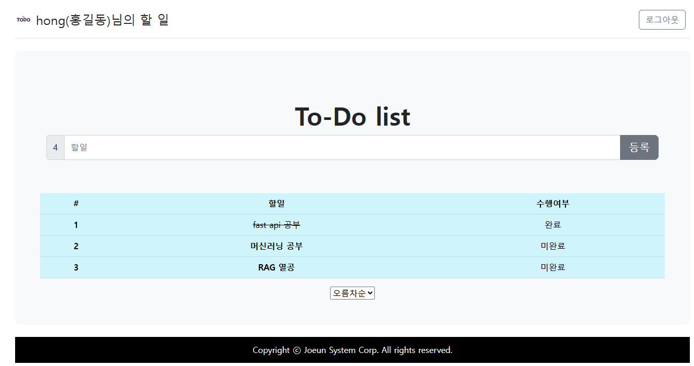
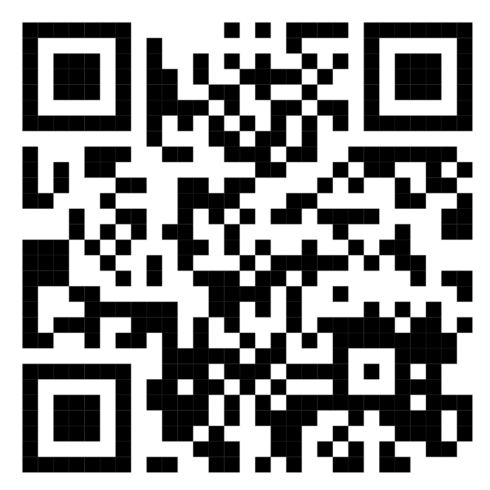

실제 사용 화면을 녹화했습니다. 영상을 누르면 크게 볼 수 있습니다.

프로젝트에 대한 설명
프로젝트에서 중요한 부분만 골랐습니다.
app.py · 할 일 추가
@app.route('/create', methods=["POST"])
def create():
todo = Todo(content=request.form.get("content"))
create_todo(todo) # DB에 저장
return redirect(url_for("todos", order="desc"))파일은 assets 폴더에 넣고 아래 링크 주소를 맞춰 주세요.

휴대폰 카메라로 QR을 찍으면 서비스가 열립니다.
서비스 열기